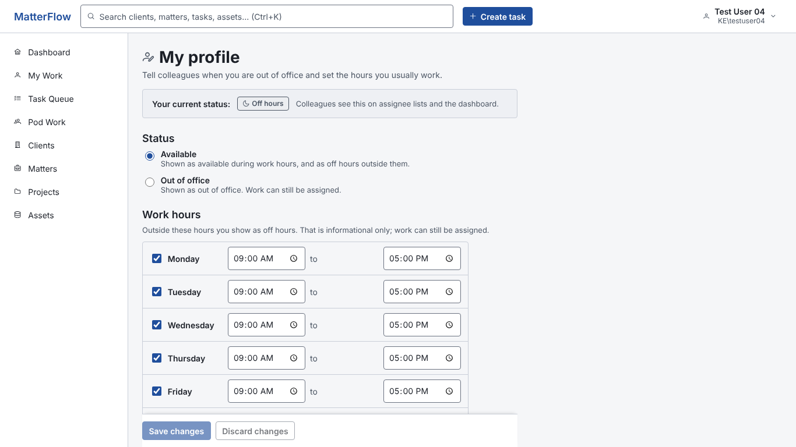

| Name | Test User 04 |
| Windows account | KE\testuser04 |
| testuser04@example.test | |
| Role | Data Technician |
| Pods | Demo Workspace Support Pod (primary) Demo Processing Pod |
Same data and API. Header uses the record-header pattern (22 px title, context line, one primary action; no Edit or Activity because the page is edited in place). Weekday toggles replace seven rows: about 16 Tab stops instead of about 50, and the page needs no scrolling at 1366x768.